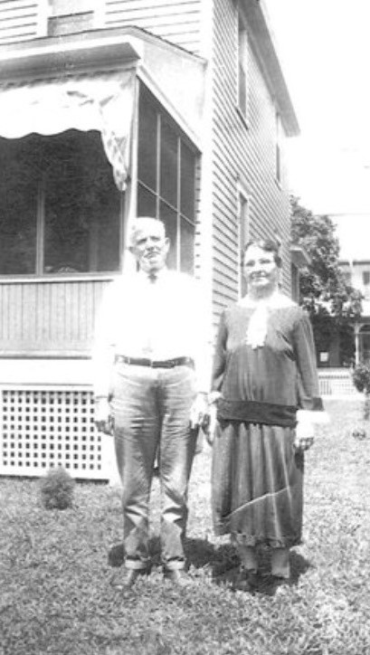
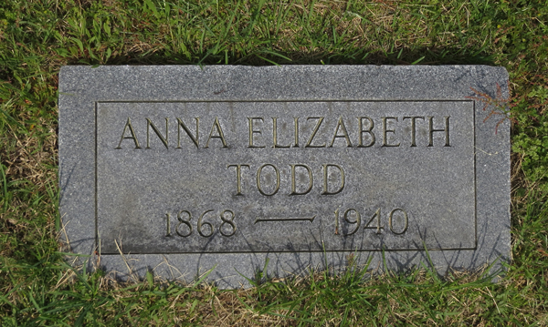

Anna Elizabeth "Lizzie" Webster
1868–1940
Life Events
Born: January 19, 1868 — Deal Island, Somerset County, Maryland
Died: July 9, 1940 — Crisfield, Somerset County, Maryland
Family
Father: Gabriel Snead Webster
Mother: Susan A. "Susie" Windsor
Siblings
Military Service
No military service information has been added.
Biography
Anna Elizabeth Webster, known as Lizzie, was born on January 19, 1868, on Deal Island in Somerset County, Maryland. She was the daughter of Gabriel Snead Webster (1822–1871) and Susan A. Windsor (1843–1911), who married on December 20, 1865. Her 1940 Maryland death certificate identifies her parents as Snead Webster and Susie Windsor, both born on Deal Island.
Anna was the older sister of William Gabriel Snead Webster (1871–1939). Their father died in 1871, when Anna was approximately three years old. Their mother subsequently married William Jacob Webster (1836–1910).
Anna married Major Carroll Todd Sr. (1868–1944), who was born on February 4, 1868, in Dorchester County, Maryland. Their marriage date has not yet been established. Anna's death certificate identifies Major Carroll Todd Sr. as her husband and lists Ira Todd of Crisfield as the informant.
Anna lived in Crisfield, Somerset County, Maryland, during the later years of her life. Her death certificate records her residence as Maryland Avenue and states that she had lived in Crisfield for 22 years. Her occupation was recorded as housework.
Anna Elizabeth Webster Todd died on July 9, 1940, in Crisfield, Maryland, at the age of 72. Her death certificate records burial on July 11, 1940. She was buried at Sunny Ridge Memorial Park in Crisfield, where her husband, Major Carroll Todd Sr., who died on January 22, 1944, is also buried.
Photos

Grave & Burial

Sources
-
1940 Maryland Death Certificate – Anna Elizabeth Webster Todd
Type: death_certificateState of Maryland Certificate of Death No. 07890 records the death of Anna Elizabeth Todd on July 9, 1940, in Crisfield, Somerset County, Maryland. She was born January 19, 1868, on Deals Island, Maryland, and was 72 years, 5 months, and 20 days old. Her husband was identified as Major Carrol Todd Sr., with the spelling recorded on the certificate; his gravestone identifies him as Major Carroll Todd. Her father was recorded as Snead Webster and her mother as Susie Windsor, both born on Deals Island. The certificate lists her residence as Maryland Avenue, Crisfield, and records 22 years of residence in the town. Her occupation was housework. Ira Todd of Crisfield was the informant. The certificate records burial on July 11, 1940, without naming the cemetery. Family burial information identifies Sunny Ridge Memorial Park in Crisfield as her burial location.
Location: Crisfield, Somerset County, Maryland, United States
Supports: Anna Elizabeth Todd died on July 9, 1940, in Crisfield, Somerset County, Maryland., Her birth date was January 19, 1868., Her birthplace was recorded as Deals Island, Maryland., Her father was identified as Snead Webster., Her mother was identified as Susie Windsor., Her husband was identified as Major Carrol Todd Sr., Her residence was Maryland Avenue in Crisfield., She was recorded as having lived in Crisfield for 22 years., Ira Todd of Crisfield was the informant., Burial was recorded for July 11, 1940.